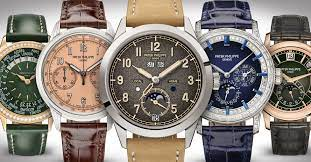

Patek Philippe & Co es una empresa suiza de relojes de lujo. En la actualidad la familia Stern es la propietaria de la empresa. Su presidente es el multimillonario Henri Stern. Sus artículos son considerados símbolos de alto poder adquisitivo. Es uno de los fabricantes de relojes más caros del mundo. Su artículo más barato se sitúa en unos 7000 dólares. Con los años, los relojes Patek Philippe han sido usados por un número notable de personas de estatus económico elevado, incluidos los miembros de la realeza, estrellas de cine y magnates. Es conocido el hecho de que el rey emérito de España, Juan Carlos I de Borbón, suele lucir en su muñeca un reloj fabricado por esta lujosa empresa suiza de origen polaco.
